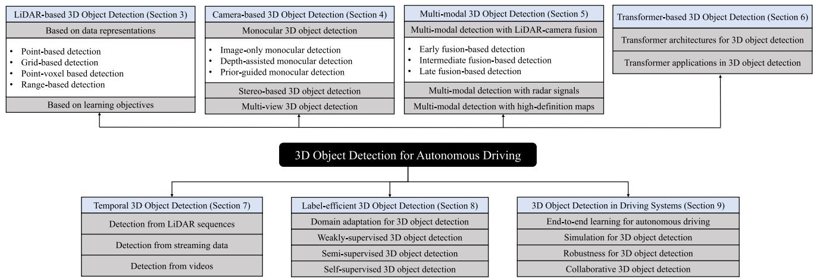
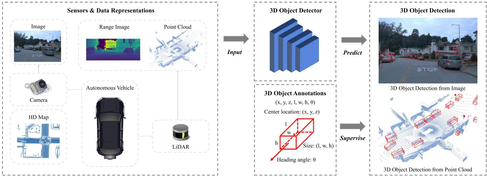
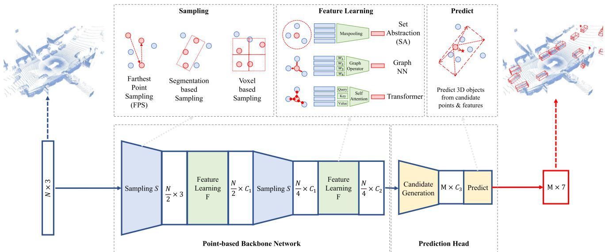
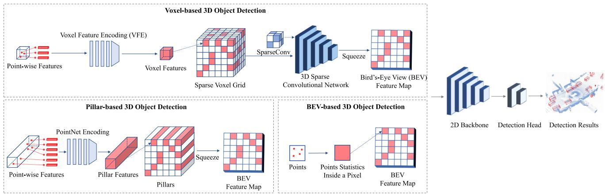

阶段 J · 基础零件 / Lesson 0196
三维检测综述（2023）上：点、体素与 BEV
上一课我们拿到了点云；这一课要回答的是「在一片点里怎么框出那辆车」，而答案居然只有一句话：先决定这些点被装进什么容器 📦
🎯 主题：三维目标检测的数据表示（点云被塞进什么容器）
👥 作者：Jiageng Mao、Shaoshuai Shi、Xiaogang Wang、Hongsheng Li
📅 2023 · 3D Object Detection for Autonomous Driving: A Comprehensive Survey
本节目标
读完你应该能：① 写出一个 3D 框的全部参数，并解释为什么只有偏航角、没有俯仰和翻滚 ；② 分清这篇综述的两根分类轴 ，知道常见的「点 / 体素 / BEV / 多模态」四条其实跨了两根轴；③ 说清三种表示各自「保留了什么、丢掉了什么、代价在哪」；④ 说清楚为什么「基于点」的推理会慢，「基于网格」的格子尺寸为什么是个两难。
和前面课程怎么接
这一课真正接的是第二季 0033 、0034 、0035 讲的空间表示（体素 / TSDF / 八叉树），以及第一季 0002 那条「地图怎么存，决定了你能回答什么问题」的主线。第四季 0085 的 Faster-LIO 把 k-d 树换成体素哈希（iVox），第七季 0135 的 Scan Context 与 0137 的 BEVPlace 把点云压成俯视图做检索——本课讲的「点 / 体素 / BEV」三种容器，在 SLAM 里全部出现过，只是用途不同。
0. 前置知识：点云，以及一个 3D 框长什么样
先把上一课留下的东西收个尾：点云是一串各自独立的测距结果，所以它有三个天生的脾气——稀疏、无序、不均匀 。稀疏是说它没有「每个像素都有值」这种密度；无序是说它没有行列坐标，换一下点的排列顺序，它还是同一片点云；不均匀是说在自驾场景里，绝大多数点都挤在雷达附近，离得远的物体只能拿到寥寥几个点 。
这三点合起来造成一个后果：图像那套「整齐的像素网格 + 卷积」的办法，没法直接用在点云上。 这篇综述整整一章的内容，其实都在处理这件事。
检测这件事，一句话就能说完
这句话在说什么： 给检测模型 $f_{det}$ 一路或多路传感器数据 $\mathcal{T}_{sensor}$，它吐出一组框 $\mathcal{B}$——里面是 $B_1$ 到 $B_N$ 一共 $N$ 个 3D 物体框。
用人话再说一遍： 给它一堆传感器数据，它还你一串「框」。注意这与 SLAM 回答的问题完全不同——SLAM 回答「我在哪」，检测回答「周围有什么、在哪」 。
一个 3D 框到底由几个数决定
这句话在说什么： $(x_c,y_c,z_c)$ 是框中心的三个坐标；$l,w,h$ 是长、宽、高；$\theta$ 是朝向 ；$\text{class}$ 是类别。
用人话再说一遍： 一个框 ＝ 在哪（3 个数）＋ 多大（3 个数）＋ 朝哪（1 个数）＋ 是什么（1 个数） ，一共 8 个量。
★ 这里有一个几乎所有转述都会漏掉的关键前提： 原文明确写了，$\theta$ 是「在地面上的 偏航角（heading angle，也就是 yaw angle）」。换句话说，这个 3D 框是一个「平放的盒子」——它假设物体不会倾斜，所以参数里根本没有 roll（翻滚）和 pitch（俯仰） 。
为什么可以这样简化？因为这是自动驾驶场景：车不会翻。 所以只给一个角度就够了。这个前提非常重要，因为它其实是在给整个任务划定边界——如果换成无人机或者手持设备，这套框的表示就不成立了。 （顺带一提，nuScenes 那套标注还额外加了 $v_x, v_y$ 两个速度参数，用来描述物体沿两个轴的速度。）
侧视图（看得到长与高）
俯视图（看得到宽与朝向）
长 l
高 h
中心 (x_c, z_c)
框是「平放」的：只有高度，没有倾斜
朝向 θ
宽 w（俯视才看得到）
θ 是地面上的偏航角，只有这一个角度
一个框 ＝ 在哪（3）＋ 多大（3）＋ 朝哪（1）＋ 是什么（1）
这张图在画什么： 同一辆车的两个视角。左图是侧视，绿色的虚线矩形就是 3D 框在这一侧面的投影，能看出长 $l$ 与高 $h$，以及中心的高度坐标 $z_c$；右图是俯视，车被转了 28 度，绿色虚线是框在地面的投影，横箭头标出宽 $w$，黄色弧线标出朝向 $\theta$。怎么看这张图： ① 先分别在两图里找到绿色的虚线框——它们是同一个三维盒子的两个面；② 注意右图里那根从正前方（虚线）偏到车身方向的黄色角度弧——那就是 $\theta$，它是在地面上量的 ；③ 关键的一步：把两个视图合起来想，你会发现盒子的侧面永远是直上直下的——它不会歪 ，这就是「没有俯仰和翻滚」的样子。要记住的一句话： 3D 框不是「任意姿态的盒子」，而是一个平放在地面上的盒子 ——这个前提决定了整套 3D 检测任务的边界。
1. 两根轴：这篇综述的骨架
这篇综述（真实标题是 3D Object Detection for Autonomous Driving: A Comprehensive Survey ）做的事情不是提出新方法，而是把「在一堆三维点里框出车和人」这件事，按两层维度做成一棵完整的分类树 ，再逐类分析「这条路能干什么、卡在哪」。
这里必须先做一次纠正，否则整棵分类树都会画歪。
纠正：常见的「点 / 体素 / BEV / 多模态」四条，跨了两根轴
这篇综述的骨架其实是两根轴 ，不是一根：
第一轴 —— 谁给的数据 ：LiDAR-based、Camera-based、Multi-modal 三大类。第二轴 —— 点云被塞进什么容器 ：Point-based、Grid-based（Voxels / Pillars / BEV feature maps）、Point-Voxel based、Range-based。
日常说的四条里，「基于点」「基于体素」「基于 BEV」属于第二轴（第 3.1 节的四种表示），而「多模态融合」属于第一轴（第 5 章） 。把它们并排成一组，就等于把横轴和纵轴当成了同一条线上的点。
原文在 3.1 节开头把这一轴的四种表示一口气列了出来：point-based、grid-based、point-voxel based、range-based ——注意是四类，不是三类 。
另外还有几章是横切 的，不是第四类传感器：第 6 章的 Transformer 与第 7 章的时间序列，都是「按模型结构」或「按用不用历史帧」对前三类再切一刀；第 8 章按标签多少再切一刀；第 9 章讲这些检测器在驾驶系统里怎么用。把这个骨架记住，后面所有名词都能找到挂靠点。

原图注（Fig. 1）： Hierarchically-structured taxonomy of 3D object detection for autonomous driving.（中译：自动驾驶三维目标检测的层次化分类体系。）怎么看这张图： 这张图就是整篇综述的目录树，建议先横着看最上一层的分叉——那是第一轴（谁给的数据） ；再顺着 LiDAR 那一支往下看，找到「data representations」那一层，那是第二轴（点云塞进什么容器） 。两条轴在图上的高度是不同的 ，这正是本课第一节要你分清的地方。

原图注（Fig. 2）： An illustration of 3D object detection in autonomous driving scenarios.（中译：自动驾驶场景中三维目标检测的示意。）怎么看这张图： 这张图说明「任务长什么样」——一辆车在街上走，感知系统要在三维空间里框出周围的物体。注意框是立体的、有朝向的 ，这正好呼应上一节那 8 个参数；同时也要注意框的底部都贴在地面上（因为框是平放的）。
2. 不改变点的形状：基于点（Point-based）
第一种思路最直白：点云本来就是点，那就别改造它。 不去切成格子、不去压成图，直接在原始点上做「采样 + 局部聚合」，最后在降采样后的点上回归出 3D 框。
这一路线的开创者是 PointRCNN 。它的流程是这样的：
先用 FPS（farthest point sampling，最远点采样） 把点云一点点稀释——每次挑出离已选点集最远的那个点，直到剩下固定个数。再对每个保留下来的点做 ball query ：以它为中心画一个固定半径的球，球内的点算作它的「邻居」。
把每个球里的点送进一个小网络（MLP + 最大池化），学出一个特征——这套动作有个名字叫 set abstraction（集合抽象） ，是 PointNet++ 提出的标准件。
最后在这些降采样后的点上，直接回归 3D 框。
它的好处： 保留了最原始的几何细节。因为点从来没有被量化过 ，所以远处那些稀疏的小目标不容易被「格子」吃掉。这也是点基方法在早期 KITTI 榜单上曾经的强项。
它的毛病，原文说得很直接：
原文原话
最远点采样「本质上是一个串行算法，无法做到高度并行 」。
串行的意思很朴素：选第二个点的时候，必须知道第一个点选了谁；选第三个点的时候，必须知道前两个选了谁。 每一步都依赖上一步，所以没法把这一整件事铺到 GPU 的一万个核心上同时干。直接后果就是推理慢、难实时 。
而且点基方法的「表示能力」被两个旋钮卡着：
上下文点的个数 ——每个点要看多少个邻居；ball query 的半径 ——半径太小，球里点太少、信息不够；半径太大，把远处的东西也拉进来，局部细节反而被抹平。
这两个旋钮都不是能随手调好的，原文把它们列为点基方法的固有权衡。
数字上看得更清楚： KITTI 数据集上「Car 类、$AP_{3D}$、moderate 难度」这一列，点基方法从 2019 年 PointRCNN 的 53.46% 提升到 2020 年的 79.57% ；而速度上，点基里最慢的代表 Point-GNN 要 640 毫秒 一张——相当于每秒一个半帧多一点。精度上来了，速度是这一支始终的短板。

原图注（Fig. 4）： An illustration of point-based 3D object detection methods.（中译：基于点的三维目标检测方法示意。）怎么看这张图： 注意这张图里没有出现任何规则的网格 ——点就是点，网络在原始点上做采样与局部聚合。看的时候盯住两件事：① 哪些点被「留下」了（那就是 FPS 的结果）；② 每个被留下的点周围有没有一圈虚线或阴影（那是 ball query 的球）。「不规则的球」正是这一路线与后面体素路线最直观的区别。
FPS：一个一个串行地选
ball query：一个半径旋钮
①
②
③
选第 2 个点，得先知道第 1 个选了谁
本质是串行算法，无法高度并行
→ 推理慢，这一支最难实时
半径太小：只圈到几个点
信息不够，学不出结构
半径太大：把远处也拉进来
局部细节反被抹平
同一个「球」，大小决定它学到的是细节还是上下文
点基路线的两个旋钮：看几个邻居、球开多大
好处也很实在：点从没被量化过，远处稀疏的小目标不容易被格子吃掉
KITTI Car 的 AP_3D（moderate）从 53.46% 一路做到 79.57%
这张图在画什么： 左边是 FPS 的示意——一片散点里，黄色的 ①②③ 是被依次挑出来的三个点；右边是 ball query 的两种半径，绿圈太小只圈到几个点，红圈太大把所有东西都拉进来。怎么看这张图： ① 左边重点不是「选出了谁」，而是顺序 ——② 必须在 ① 之后才能确定；② 右边重点不是「哪个半径对」，而是这个旋钮没有普适答案 ——它取决于你想让网络看多细；③ 两幅图合起来解释了为什么这一支「准但慢」。要记住的一句话： 点基路线的天赋是不丢几何 ，代价是必须串行 。后面所有「切格子」的方法，本质上都是在拿几何精度换并行度。
3. 把空间切成小方块：基于网格（Grid-based）
第二种思路完全反过来：既然图像那套卷积好用，那就把点云改造成「像图像一样规整」的东西。 做法是把空间切成规则的小格子，然后把点分配进格子。这一支下面有三个子类，原文分得很清楚。
① Voxels（体素）：把空间打成三维小立方体
由 VoxelNet 开创，它提出了 VFE（voxel feature encoding，体素特征编码） 层：把落进同一个立方体里的那些点，编码成一个特征向量。后来 SECOND 用稀疏卷积与子流形卷积 （只在非空的格子上做卷积）取代了笨重的稠密三维卷积，成为这一路最主流的骨干——从那以后，三维稀疏卷积走向了实时。
② Pillars（柱体）：体素的一个「不限高」变体
由 PointPillars 提出。所谓柱子，就是把体素的竖直方向拉到底——从地面一直延伸到天上的一根柱子 。柱内不管有多少点，都用一个小 PointNet 压成一个特征，然后把这些柱子「撒回」到一个二维平面上，得到一张伪图像，接下来就可以直接用现成的二维卷积检测器。
它的最大特点是快。 原文明确说它只用 16 毫秒 ，并且它的架构被很多后续工作采用。但要如实说一句：柱体方法的精度一般不如体素方法 ——这在这篇综述里是明写的对立。
③ BEV feature maps：直接从点云统计出一张俯视图
更极端的做法是直接跳过三维：把点云在俯视方向上统计成一张二维图（比如「这一格有没有点」的二值占用图 ，或者「这一格最高多高、有多密」的高度 + 密度 统计），然后交给一个标准的二维 CNN 去做检测。
这是最快、也最能借用二维检测全部家当的一支 ——因为检测器那一侧完全是二维的。代价是原文那句直白的话：纯 BEV 统计「丢掉了太多三维信息 」。
这一支的两条通病，原文都点名了
量化必然丢信息。 把点分配进格子的瞬间，格子内部的精确三维位置就被抹成了一个格子索引。格子越小细节越多，但内存是平方增长的 （三维体素比二维更糟）。原文把这件事称为「所有基于网格的三维检测方法都面临的一个开放挑战」。纯 BEV 统计丢得最狠 ——高度这一维被压成一两个统计量。
数字上： KITTI 的 Car / $AP_{3D}$ / moderate 这一列，网格基从 2018 年 BirdNet 的 50.81% 一直做到 2021 年 Voxel Transformer 的 82.09% ——这是全篇所有路线里最高的 moderate 数字 。速度上则是一个梯度：PointPillars 16 毫秒 、CIA-SSD 30 毫秒、Voxel R-CNN 40 毫秒、CenterPoint 70 毫秒。快与准在这篇里是明写的对立，而网格这一支提供了全部的快端。

原图注（Fig. 5）： An illustration of grid-based 3D object detection methods.（中译：基于网格的三维目标检测方法示意。）怎么看这张图： 和上一张「基于点」的图对着看，最直观的差别就是这张图里出现了规则的格子 。看的时候盯住三件事：① 格子是几维的（三维体素？竖到底的柱子？还是压平的俯视图？）；② 点被塞进格子之后，格子内部还剩下多少信息；③ 网络是在三维上卷积，还是先压成二维再卷积。这三问分别对应原文里的 Voxels / Pillars / BEV feature maps 三个子类。
4. 同一辆车的三种存法（本课最该记住的一页）
把上面两条路线收拢到一张图上：同一片点云、同一辆车，可以存成三样东西。 下面这张图是本课的核心，请慢慢看。
① 基于点
② 装进小方块（体素）
③ 从天上往下压成图（BEV）
散点：不规则的云
格子：点被抹成索引
俯视：高度被压平
保留：每个点的真实坐标
丢掉：几乎不丢
代价：不规则，只能一样一样采样
保留：空间结构，能做三维卷积
丢掉：格子内部的精确位置
代价：格子越小，内存涨得越快
保留：平面位置与占用
丢掉：高度被压成一两个统计量
代价：信息丢得最多
同一个真实点云，三种存法——分数不一样的根就在这里
这张图在画什么： 同一辆车的三份「存档」。左格是原始点：车身轮廓还在，但只有真正被激光打到的那些点，分布很不均匀；中格把车装进小方块，有点的格子被点亮成半透明蓝块，车的形状能用格子拼出来；右格是俯视，车被压成一个扁平的彩色矩形（越靠车顶越红、车头偏黄），高度那一维只剩一点统计量。怎么看这张图： ① 从左到右，规则性越来越好、可借用的工具越来越多 （散点没法卷积、格子能卷、俯视图能用现成的二维检测器）；② 同时，丢掉的东西越来越多 （精确位置 → 格子索引 → 连高度都被压平）；③ 记住底部三行：三格各自「保留了什么、丢掉了什么、代价在哪」，这就是全部。要记住的一句话： 为什么同一个模型在 BEV 口径下的分数总比在 3D 口径下好看？根就在右格——高度被压平了，判命中时自然更宽容。 下一课讲评测度量时会回来用这一点。
除了这三类，原文还列了两类值得点一下：
Point-Voxel based（点-体素混合） ：既想要点的精度、又想要网格的效率，于是两条路一起走。KITTI 上这一支从 75.73% 做到 82.08% ，与纯网格路线的最好的数字几乎齐平。Range-based（范围图像） ：把点云按「一圈一圈」的球面坐标整理成一张图来处理。这里有个容易被忽略的事实：原文明确指出，范围图像才是激光雷达的原始数据格式，点云是由它把球坐标转成笛卡尔坐标之后得到的 ——也就是说，点云反而是派生表示 。这一支的代表 RangeIoUDet 跑 22 毫秒，速度上属于第一梯队。
那么，这和 SLAM 有什么关系？（下面这段是我们的分析，原文 0 次提到 SLAM）
我们的分析是：3D 检测与 SLAM 不是上下游，而是并行消费同一路传感器数据的两个问题。 两者问的问题不同——SLAM 问「我在哪」（输出是自车位姿轨迹与地图），检测问「周围有什么、在哪」（输出是一组 3D 框）。但它们脚下踩着同一层地基：点云怎么被组织成一个可计算的结构。
这一层地基，两条线各自踩了很多年：
同一种表示
在三维检测里做什么
在 SLAM 里做什么
体素 把点云量化成规则格网，好做三维稀疏卷积
第二季 0033 /0034 /0035 拿它建图；第四季 0085 的 Faster-LIO 把 k-d 树换成体素哈希（iVox），换取更快的近邻查询
基于点 直接学逐点特征（FPS + ball query）
点云配准也借用了同一套 set abstraction 层；第四季 0093 那几篇的对照基线里就有点云直接学特征这一支
BEV 俯视图 给下游检测器一张紧凑的俯视伪图像
第七季 0135 的 Scan Context、0137 的 BEVPlace 拿它做旋转不变的地点检索
一句话概括这张表： 检测和 SLAM 面对的其实是同一个问题——稀疏、不规则的点，怎么组织成高效的结构 ；只是需求不同：检测要「批量前向跑得快」，SLAM 要「增量维护 + 精确近邻查询」。同一个表示，两条用途 ，这也是这层地基值得单独学一遍的原因。
最后补一句诚实的：原文全文 0 次出现 SLAM，上面这三行的对应关系是我们的分析，不是原文的结论。 写论文引用时不能说「该综述指出三维检测与 SLAM 的关系」。
互动判断
下面哪一句说完「基于点 vs 基于网格」的取舍最准确？
拿几何精度换并行度
一个能出框一个不能
5. 它不完美在哪：这个零件把什么后果留给了 SLAM
本季每个零件都要讲「它不完美在哪」。三维检测这套表示的不完美，几乎全部落在同一个点上：信息在「怎么存」这一步就已经丢了一部分，后面再好的网络也补不回来。
① 量化丢信息，而且格子尺寸是个真两难
点被分配进格子的那一瞬间，格子内部的三维精确位置就没了。原文把这称为「所有基于网格的三维检测方法都面临的一个开放挑战 」——注意「开放」两个字：这不是一个谁做错了的问题，而是一个到目前为止没有通解的问题。 格子大一点，内存省、但细节糊；格子小一点，细节好、但内存按平方涨（三维比二维更狠）。
② 点基的瓶颈是算法结构，不是工程优化
FPS 是串行算法，这句话的严重性在于：它不能靠「换个更快的库」解决。 串行是数学结构上的依赖关系，不是实现细节。所以这一支的慢是结构性的。
③ 纯 BEV 丢得最狠
把三维压成俯视图，等于主动放弃高度这一维。原文那句「丢掉了太多三维信息」是明写的。这一条在 SLAM 里有一个对应的后果，下一课会展开：评测时 BEV 口径的分数天然比 3D 口径好看，正是因为高度误差在俯视图上根本看不出来。
④ 自驾场景让「不均匀」这件事雪上加霜
前面提过，自驾场景里绝大多数点都挤在雷达附近，远处的物体只能拿到寥寥几个点 。这意味着：远处物体的「点数」根本不足以支撑一次可靠的检测 ——而这恰恰也是 SLAM 里远距离配准不稳的同一个根：点少了，几何约束就弱了。
⑤ 一条容易被忽略的代价链
原文在分析推理时间时有一句很重的判断：即使硬件变强，这些年推理速度也并没有显著改善 ，因为大家只追精度、对高效推理关注得少。请注意这句话对 SLAM 的含义：你不能指望「明年 GPU 更快了，检测就一定跟得上」。
这正是本季那条暗线的又一处落点。第八季 0155 、0156 讲的动态环境处理，痛点是语义前端太慢（Mask R-CNN 约 195 毫秒一张，≈5 fps）；而本课告诉你，即使在纯激光这一侧，速度与精度也是明写的对立 ——PointPillars 只花 16 毫秒但精度一般，精度最高的路线要几十毫秒以上，点基最慢的要 640 毫秒。这就是为什么 SLAM 系统不能只靠「语义 + 几何」两道闸门简单串联，而必须让几何那条线自己也足够强。
读完你应该能回答
1. 一个 3D 框由哪几个量决定？
中心 $(x_c,y_c,z_c)$ ＋ 尺寸 $(l,w,h)$ ＋ 朝向 $\theta$ ＋ 类别。关键是 $\theta$ 是地面上的偏航角，没有俯仰与翻滚 ——这个框是「平放」的，因为在驾驶场景里车不会翻。
2. 这篇综述的两根轴是什么？
第一轴是谁给的数据 （LiDAR / Camera / Multi-modal）；第二轴是点云塞进什么容器 （Point / Grid（Voxels·Pillars·BEV）/ Point-Voxel / Range）。常见的「点 / 体素 / BEV / 多模态」四条跨了这两根轴。
3. 三种表示各自保留了什么、丢掉了什么？
基于点 ：保留每个点的真实坐标、几乎不丢，但不规则、只能串行采样；体素 ：保留空间结构、能做三维卷积，丢掉格子内部的精确位置，格子越小内存涨得越快；BEV ：保留平面位置与占用，丢掉高度（压成一两个统计量），信息丢得最多。
4. 为什么基于点的方法慢？
因为 FPS 最远点采样「本质上是一个串行算法，无法高度并行」——选第 $k$ 个点必须知道前 $k-1$ 个选了谁。这是结构性的，换更快的库也解决不了。另外它还有两个旋钮（上下文点数、ball query 半径）需要权衡。
5. 快与准在这篇里是什么关系？
明写的对立。PointPillars 只用 16 毫秒 （约 60 Hz）但精度一般不如体素方法 ；而 KITTI moderate 上最高的数字 82.09% 来自网格路线（Voxel Transformer）。点基最慢的代表要 640 毫秒 。
6. 它和 SLAM 是什么关系？
我们的分析 （原文 0 次出现 SLAM）：两者不是上下游，而是并行消费同一路数据、回答不同问题的两个任务；它们共享同一层地基——稀疏不规则的点怎么组织成高效结构 。体素、点基、BEV 三种容器在 SLAM 里分别对应建图、配准特征、地点检索。
课后练习
一个 3D 框有 8 个参数。如果换成无人机场景，你会觉得哪几个参数不够用？为什么？
展开查看答案
缺的是俯仰（pitch）与翻滚（roll） 。原文明确说 $\theta$ 只是「地面上的偏航角」，也就是说这个框被假设为永远平放 ——这个简化成立的前提是「车不会翻」。所以这套框的表示和「地面车辆」这个前提是绑定的 ——这也提醒我们：读任何任务的输出定义时，先去找它没说出口的那个假设。
为什么「基于点」的路线不能用「换个更快的实现」来提速？
展开查看答案
因为慢的根源是算法结构 ：FPS 每一步都依赖前一步的结果——选第 2 个点必须知道第 1 个选了谁，选第 3 个必须知道前两个。这种「链式依赖」没法拆开并行，而 GPU 的强项恰恰是「把互不依赖的大量小任务同时做掉」。原文原话就是「本质上是一个串行算法，无法高度并行」。 所以这不是工程细节问题，而是这条路线与生俱来的形状。要提速，只能改变「怎么选点」这件事本身——那已经不是在优化实现，而是在改方法了。
「体素的格子越小越好」这句话哪里不对？
展开查看答案
格子越小，量化损失确实越小（格子内部的精确位置保留得越多），但代价是内存按平方增长 ——而且是三维，比二维更严重：边长减半，格子数变 8 倍。不是一个已经被解决的问题 。正确的说法是：格子尺寸是一个要在精度与内存之间权衡的旋钮，没有普适最优值 。
把「点 / 体素 / BEV」和 SLAM 里的事情对应起来：它们各自在 SLAM 里出现过吗？请各举一个例子。
展开查看答案
体素 ：第二季
0033 /
0034 /
0035 拿它建稠密地图；第四季
0085 的 Faster-LIO 把地图结构从 k-d 树换成体素哈希（iVox）来加速近邻查询——原文自己承认体素的取舍是「构造与删除几乎常数时间，但做不了严格的 k 近邻或范围搜索」。
基于点 ：点云配准里直接借用了 PointNet++ 的 set abstraction / feature propagation 层；第四季
0093 的相关工作里，「直接在原始点云上学特征」就是一条对照支线。
BEV ：第七季
0135 的 Scan Context 与
0137 的 BEVPlace 用它做旋转不变的地点检索。
注意： 这些对应关系是
我们的分析 ，原文 0 次提到 SLAM。
原文说「即使硬件变强，这些年推理速度并没有显著改善」。这句话对设计一个 SLAM 系统有什么实际影响？
展开查看答案
它意味着
不能把「等硬件升级」当成速度问题的解法 。既然整个领域在追精度、对高效推理关注得少，那么一个实时 SLAM 系统必须自己做取舍：
主动选一条快的路线，而不是挑精度榜单上的第一名。
原文里的梯度可以当参考：PointPillars 16 毫秒、CIA-SSD 30 毫秒、Voxel R-CNN 40 毫秒、CenterPoint 70 毫秒，而点基的 Point-GNN 要 640 毫秒。
这也解释了第八季
0155 、
0156 那一块为什么会被语义前端的速度卡住——
「语义 + 几何双保险」之所以必须，一半原因是语义那一半本来就不够快、也不够准。